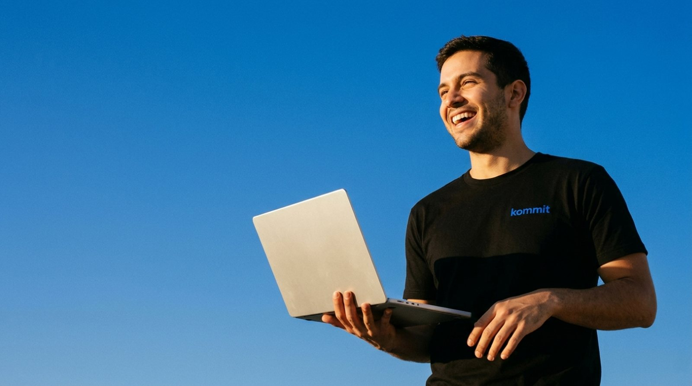

01Brand Strategy · Systems · Product · 2022–2026
Kommit · Design Ownership
Fui Lead Designer y Design Owner: el guardián de la marca. Escribí el manual de marca, llevé el design system de la v1 a la v5 y el Company Portal a producción.
Qué hice
- Manual de marca de 45 páginas
- Design System v1 → v5
- Company Portal (12+ módulos)
- Marca en todos los puntos de contacto
Caso completoVer caso ↗